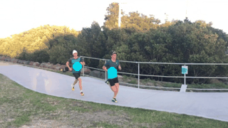
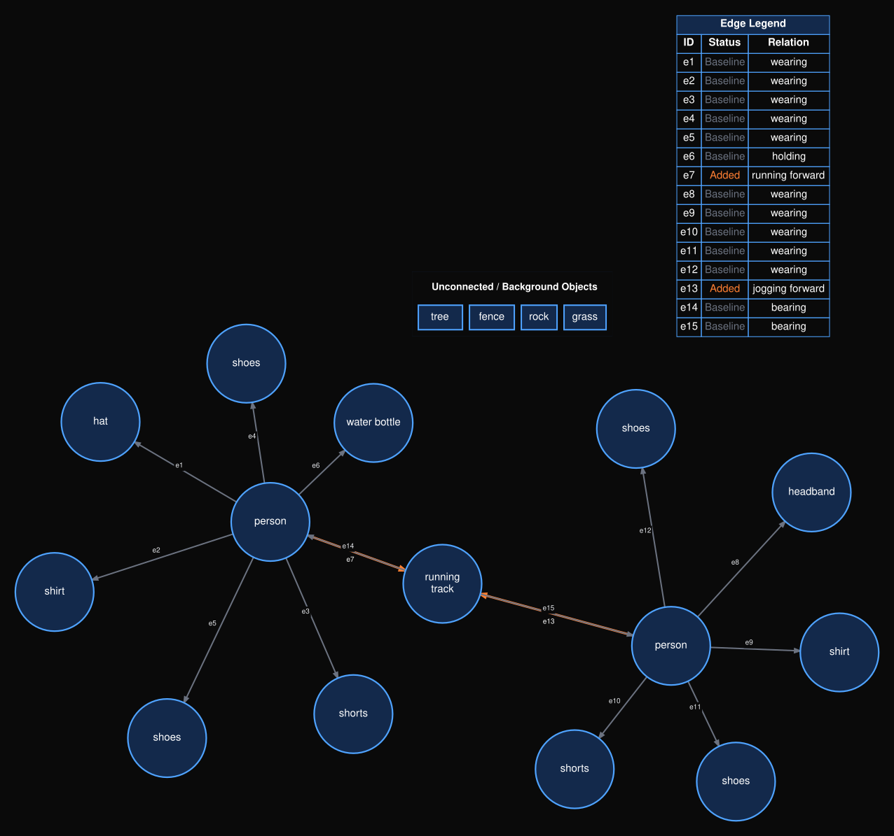
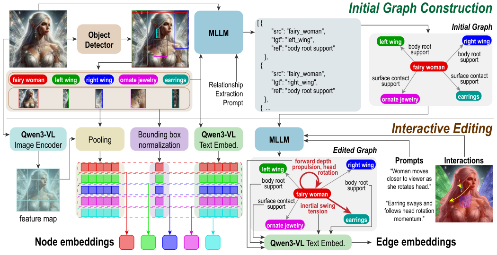
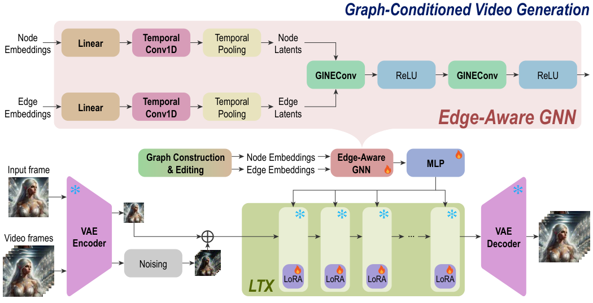
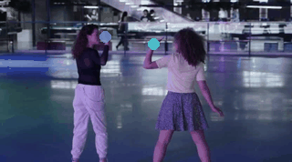
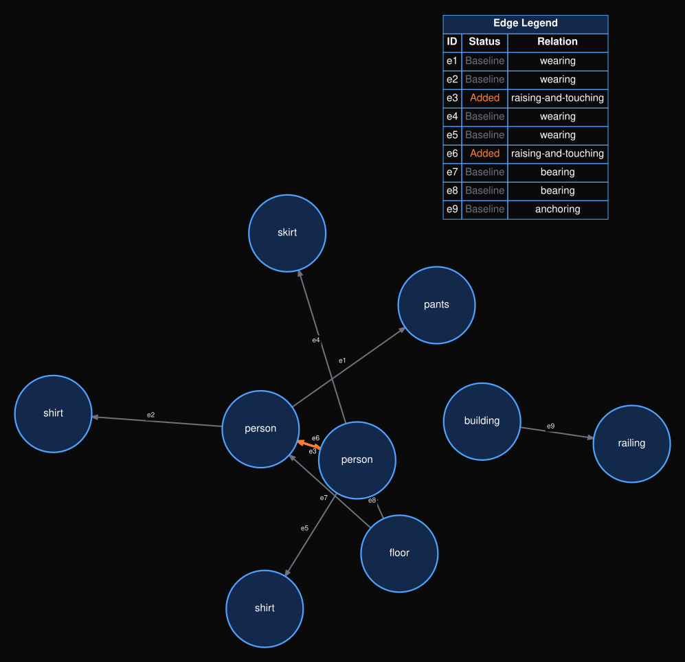
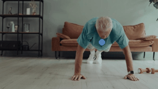
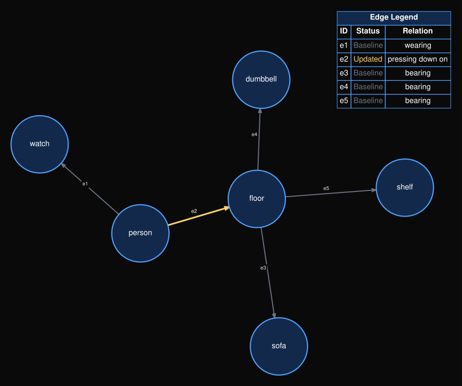

TL;DR
We introduce GraphVid, a framework for controlling image-to-video generation through object interactions. Users edit a graph to specify how objects push, pull, lift, or move relative to one another, guiding coherent multi-object motion.


Why Graph-Based Video Control?
Trajectory control is low-level
Dense "literal" paths are hard to author for multi-object scenes, especially under occlusion, overlap, or contact.
Users think in interactions
Many desired motions are naturally relational: one object pushes, follows, lifts, supports, or moves relative to another.
Graphs preserve structure
Directed nodes and edges bind the requested dynamics to the correct entities and interactions.
Abstract
Controllable video generation remains challenging because precise multi-object interactions are difficult to specify using text prompts or motion-control inputs that primarily constrain pixel displacement. Trajectory-based control requires accurate tracks for multiple objects, which scales poorly with scene complexity and becomes ambiguous under occlusion or overlap.
We introduce GraphVid, a graph-conditioned image-to-video generation framework that enables interactive control through structured directed interaction graphs. Starting from a single input frame, GraphVid constructs a scene graph over detected entities, allows users to edit object-level interactions, and translates the edited graph into conditioning tokens for a frozen video diffusion transformer.
To support this paradigm, we curate GraphVid-Bench, an interaction-centric dataset of approximately 27K videos paired with structured relational annotations. Despite using substantially less training data and fewer trainable parameters than prior motion-control methods, GraphVid achieves strong controllability and video quality. Compared with Motion-I2V, it reduces FID by up to 39.9% and FVD by 37.6%, while improving PSNR from 9.87 to 15.98 and SSIM from 0.38 to 0.61.
Contributions
- Interactive graph-based control. GraphVid enables multi-object image-to-video control through directed interaction scene graphs constructed from a single image, replacing dense trajectory authoring with intuitive object-level interaction edits.
- Edge-Aware Graph Reasoning. A GINEConv-based graph module injects directed edge semantics into message passing so that node representations capture both object identity and interaction-driven dynamics.
- Parameter-efficient graph-to-video adaptation. A lightweight graph-to-token adapter and LoRA modules condition a frozen LTX-Video 2B backbone and frozen VAE while preserving pretrained generative priors.
- GraphVid-Bench and efficient performance. We curate approximately 27K interaction-centric clips with structured graphs. GraphVid uses 0.6B trainable parameters and achieves the fastest inference among the compared methods at 200 seconds.
GraphVid Method
GraphVid is a controllable image-to-video framework that interfaces a structured directed interaction graph with a pretrained LTX-Video 2B diffusion transformer. Each node represents a detected entity, and each directed edge describes how one entity influences another. Unary actions such as rotate, move, or scale are represented as self-loop edges. The LTX DiT and VAE remain frozen; GraphVid trains only the Edge-Aware GNN, graph-to-video adapter, and LoRA modules.

GraphVid overview. Objects are detected from the input image and encoded into node embeddings. An MLLM extracts relational edges to construct an initial interaction graph. Users edit interactions through the image interface, and the resulting graph is converted into conditioning tokens that guide the frozen video diffusion transformer.
Node representations. Qwen3-VL detects objects and provides an 8192-dimensional visual embedding from mean and max pooling over each object crop. A 2560-dimensional text embedding of the object label and four normalized bounding-box coordinates are concatenated to form a 10,756-dimensional node feature.
Edge representations. Each directed edge contains an open-vocabulary textual description of the intended interaction. Qwen3-Embedding encodes this description into a 2560-dimensional edge feature.
Edge-aware graph reasoning. Node and edge features are projected to a shared 512-dimensional hidden space and processed using GINEConv layers, which inject semantic edge attributes directly into message passing.
Graph-to-video conditioning. Interaction-aware node embeddings are mapped through a three-layer MLP into 4096-dimensional LTX conditioning tokens. LoRA modules of rank 128 are inserted into the transformer's attention projections, while the original DiT and VAE weights remain frozen.

GraphVid-Bench Dataset
GraphVid-Bench pairs interaction-centric videos with directed scene graphs. Nodes represent scene entities, while edges encode the type, direction, and textual context of interactions that influence scene dynamics.
The dataset contains 27,504 curated clips drawn from WISA-80K, Something-Something v2, and MagicData. Clips are standardized to 512 × 288, 81 frames, and 16 FPS. Dynamic letterboxing preserves aspect ratio, and motion-energy windowing selects the most interaction-active segment.
| Graph Statistic | Mean | Median | Std. |
|---|---|---|---|
| Nodes / Graph | 7.76 | 5.0 | 8.03 |
| Edges / Graph | 4.85 | 4.0 | 3.46 |
| Interaction Complexity | Number of Clips |
|---|---|
| No explicit interaction | 3,881 |
| Single interaction | 10,982 |
| Multi-interaction | 12,641 |
Which interactions occur together?
GraphVideoCorpus interaction counts
Interaction statistics. GraphVid-Bench covers force and manipulation, kinematics and motion, physical contact, and support and position relations. Co-occurrence statistics show that real-world dynamics often combine multiple interaction primitives, motivating graph-structured video control.
Quantitative Results
GraphVid is evaluated on an interaction-centric MoveBench subset against trajectory-based, physics-aware, and motion-control baselines. It uses only 27K training clips and 0.6B trainable parameters, while achieving the fastest inference in the comparison at 200 seconds. We report perceptual, reconstruction, temporal, and motion-accuracy metrics, including End-Point Error (EPE).
Interaction-centric MoveBench
GraphVid is second-best overall on FID, FVD, PSNR, SSIM, and EPE while using the fewest trainable parameters and the fastest inference. Compared with WISA, it improves FID by 34.5%, FVD by 7.8%, PSNR by 5.9%, SSIM by 15.0%, and EPE by 29.3%.
| Method | Train Data | Trainable Params | Inference ↓ | FID ↓ | FVD ↓ | PSNR ↑ | SSIM ↑ | EPE ↓ |
|---|---|---|---|---|---|---|---|---|
| Wan-Move Large-scale baseline | 2M | 14.5B | 1800s | 15.56 | 82.17 | 17.21 | 0.61 | 2.6 |
| Motion-I2V | 10M | 1.2B | 790s | 28.32 | 159.32 | 9.87 | 0.38 | 3.9 |
| Tora | 630K | 5B | 1200s | 24.45 | 110.47 | 11.27 | 0.54 | 3.3 |
| MagicMotion | 23K | 1.5B | 750s | 26.57 | 105.12 | 12.04 | 0.51 | 3.2 |
| WISA | 80K | 1B | 1000s | 25.98 | 107.89 | 15.08 | 0.53 | 4.1 |
| FlashMotion | 23K | 13B | 677s | 19.02 | 104.12 | 14.04 | 0.56 | 3.8 |
| GraphVid (Ours) Efficient | 27K | 0.6B | 200s | 17.02 | 99.42 | 15.98 | 0.61 | 2.9 |
Multi-object MoveBench
On the harder multi-object subset, GraphVid achieves the best FID, FVD, and EPE among comparable-scale methods. It improves FID over FlashMotion by 10.1% and FVD by 6.4%, while using approximately 21.7× fewer trainable parameters.
| Method | Train Data | Trainable Params | FID ↓ | FVD ↓ | PSNR ↑ | SSIM ↑ | EPE ↓ |
|---|---|---|---|---|---|---|---|
| Wan-Move Large-scale baseline | 2M | 14.5B | 31.29 | 252 | 16.69 | 0.61 | 2.2 |
| Tora | 630K | 5B | 56.04 | 369 | 14.98 | 0.52 | 3.5 |
| WISA | 80K | 1B | 60.12 | 341 | 13.13 | 0.55 | 3.9 |
| FlashMotion | 23K | 13B | 55.03 | 311 | 12.12 | 0.52 | 3.9 |
| GraphVid (Ours) Efficient | 27K | 0.6B | 49.45 | 291 | 14.44 | 0.55 | 3.0 |
Qualitative Results




Each example shows the user's intended motion, the corresponding edited interaction graph, and the generated GraphVid output. The side-by-side layout illustrates how GraphVid translates graph-level relational edits into coordinated video dynamics while preserving scene appearance and object identity.
BibTeX
@inproceedings{shah2026graphvid,
title={GraphVid: Interactive Graph-Controllable Video Generation},
author={Shah, Vedant and Susladkar, Onkar and Prakash, Tushar and Nguyen, Kiet A. and Yu, Tianjiao and Juvekar, Adheesh and Wahed, Muntasir and Lourentzou, Ismini},
booktitle={European Conference on Computer Vision (ECCV)},
year={2026}
}